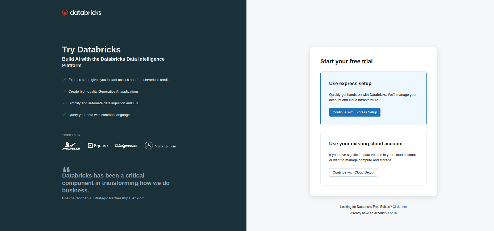
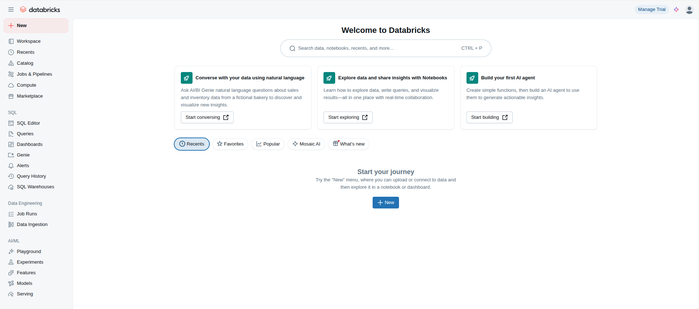
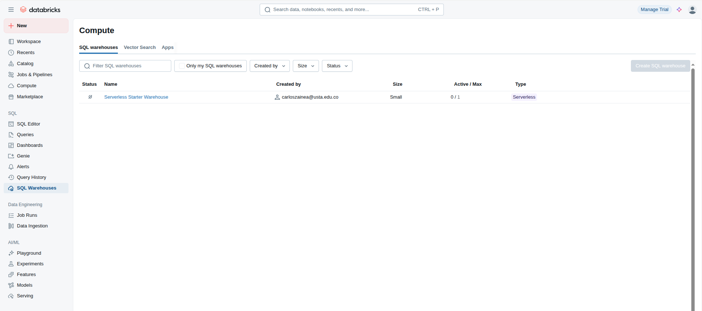
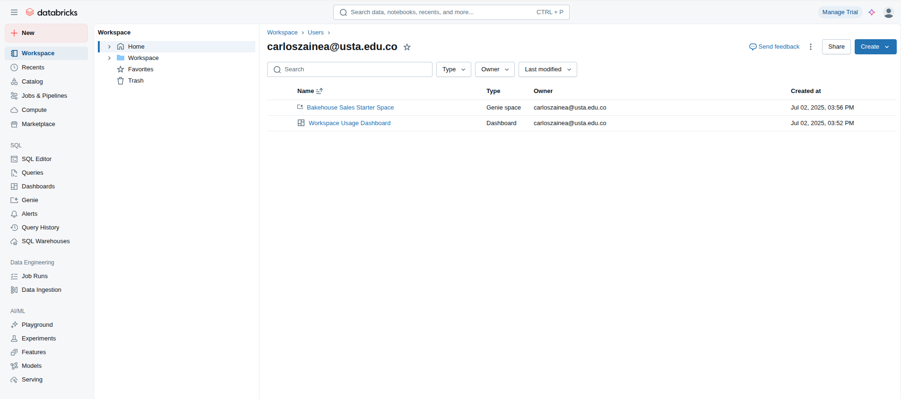
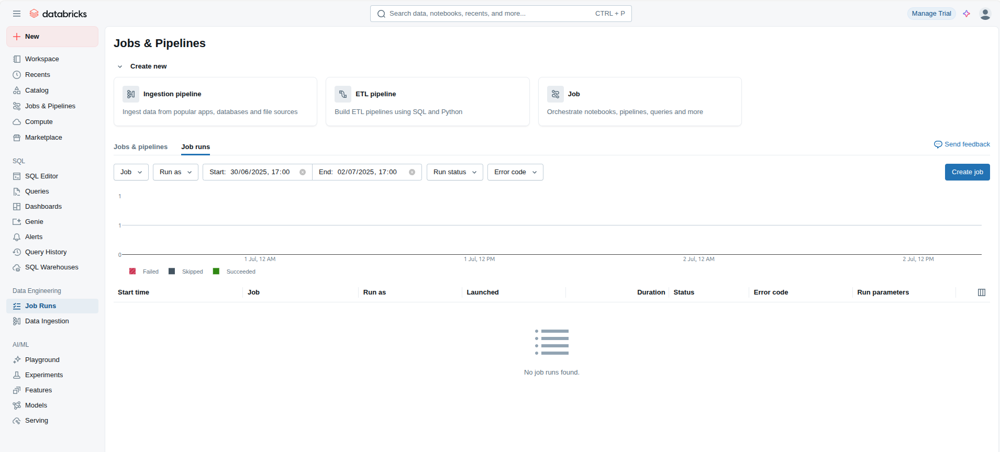
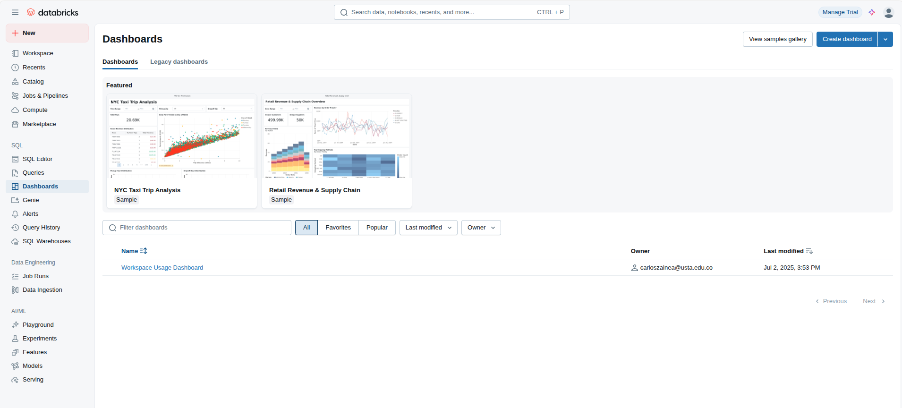

Módulo 0: Creación de una Cuenta en Databricks
Para iniciar nuestra aventura en el mundo del Big Data, el primer paso es configurar nuestro propio entorno en la nube. Usaremos la Databricks Free Edition (antes Community Edition), una versión gratuita ideal para aprender y experimentar.
Paso 1: Ir a la Página de "Try Databricks"
Abre tu navegador y dirígete a la página de registro. Puedes encontrarla buscando en Google "Try Databricks" o yendo directamente a databricks.com/try-databricks.

Paso 2: Buscar la Edición Gratuita
La página te ofrecerá iniciar una prueba completa. Ignora esas opciones. Desplázate hasta la parte inferior y busca la frase "Looking for Databricks Free Edition?".
¡Atención!
Haz clic en el enlace "Click here" para acceder al formulario de la versión gratuita. Este es el paso más importante.
Paso 3: Completa el Formulario y Verifica tu Correo
Ahora sí, completa el formulario con tus datos. Recibirás un correo de Databricks para verificar tu dirección. Haz clic en el enlace que contiene para confirmar tu cuenta y establecer una contraseña. ¡Felicitaciones! Ya tienes acceso a tu propio workspace (espacio de trabajo) de Databricks.
Módulo 1: Bienvenida a la Plataforma de Inteligencia de Datos
Databricks ha evolucionado a una "Plataforma de Inteligencia de Datos". Combina Data Warehousing, Data Engineering y Machine Learning en un solo lugar, sobre una arquitectura abierta llamada Lakehouse.
1.1. La Evolución de las Arquitecturas de Datos
Antes de sumergirnos en el "Lakehouse", debemos entender qué es una arquitectura de datos. Piénsalo como los planos de una ciudad: no solo define dónde están los edificios, sino también las carreteras que los conectan, las tuberías que llevan agua y las redes eléctricas que les dan energía. La arquitectura define cómo funciona el sistema en su conjunto.
Una buena arquitectura garantiza que los datos sean seguros, fiables, accesibles y que puedan responder a las preguntas del negocio de manera eficiente. A lo largo de los años, han surgido diferentes arquitecturas para resolver distintos problemas. Vamos a explorar su evolución.
Nota del Arquitecto: La Evolución de los Datos
1. El Mundo Ordenado: Data Warehouse
El Data Warehouse fue el rey durante décadas. Su filosofía es simple: antes de que cualquier dato entre al almacén central, debe ser extraído, transformado y limpiado rigurosamente. Este proceso se conoce como ETL (Extract, Transform, Load). El resultado es una fuente de verdad altamente fiable y optimizada para consultas de Business Intelligence (BI), pero a costa de una gran inflexibilidad. Su lema es "schema-on-write": el esquema se impone al escribir los datos.
Datos Estructurados
Esquema Rígido"] end subgraph "Consumidores" F[Reportes de BI] G[Dashboards] end A --> D; B --> D; C --> D; D -- Carga Datos Limpios --> E; E --> F; E --> G; style E fill:#f0f9ff,stroke:#003366
2. El Caos Flexible: Data Lake
Con la llegada del Big Data, el Data Warehouse se quedó corto. Se necesitaba un lugar barato y flexible para almacenar terabytes de datos de cualquier tipo (videos, logs, sensores). Así nació el Data Lake. Su filosofía es ELT (Extract, Load, Transform): primero se cargan todos los datos en su formato original y la transformación se hace después, según la necesidad. Esto ofrece una flexibilidad inmensa para la ciencia de datos, pero a menudo conduce a "pantanos de datos" (data swamps) desorganizados y de bajo rendimiento para BI. Su lema es "schema-on-read": el esquema se aplica al leer los datos.
Datos Crudos (Raw)
Todo Formato"] end subgraph "Proceso ELT" F{Transformación y Limpieza} G{Exploración ML} end subgraph "Consumidores" H[Reportes de BI] I[Modelos de Machine Learning] end A --> E; B --> E; C --> E; D --> E; E -- Datos para BI --> F --> H; E -- Datos para ML --> G --> I; style E fill:#f7fee7,stroke:#3f6212
3. La Síntesis Inteligente: Lakehouse
El Lakehouse es la arquitectura moderna que resuelve esta dualidad. Implementa una capa de gestión de transacciones y metadatos (como Delta Lake) directamente sobre un Data Lake de bajo costo. Esto permite que los mismos datos sean utilizados directamente y de forma fiable tanto para cargas de trabajo de BI (que necesitan velocidad y estructura) como para cargas de Machine Learning (que necesitan flexibilidad y acceso a datos crudos). Elimina la necesidad de duplicar datos en sistemas separados, simplificando la arquitectura y reduciendo costos.
+ Delta Lake
Fiabilidad y Gobernanza"] end subgraph "Consumidores Directos" F[Reportes de BI] G[Dashboards] H[Modelos de Machine Learning] I[Inteligencia Artificial] end A --> E; B --> E; C --> E; D --> E; E -- Acceso Directo y Rápido --> F; E --> G; E --> H; E --> I; style E fill:#ffe4e6,stroke:#DA291C
1.2. Recorrido por la Interfaz Moderna
Ahora que entendemos el "porqué" del Lakehouse, exploremos el "cómo" en Databricks. El menú de la izquierda es nuestro centro de comando, organizado por roles:

Workspace
Espacio de Trabajo
Es tu centro de colaboración. Aquí organizas tus proyectos en carpetas, creas notebooks para desarrollar código, y gestionas el control de versiones con Git.
Catalog
Catálogo de Datos
El corazón de la gobernanza de datos. Unity Catalog te permite explorar todos tus activos de datos usando una jerarquía de 3 niveles: Catálogo > Esquema > Tabla. Aquí defines permisos y linaje de datos.
Compute
Potencia de Cálculo
El "músculo" de Databricks. Aquí administras los Clusters para desarrollo en notebooks y los SQL Warehouses, que son motores ultra-rápidos optimizados para tus consultas de BI y SQL.
SQL
Herramientas de Analítica
El entorno del analista de datos. Incluye el SQL Editor para lanzar consultas, el creador de Dashboards para visualizar KPIs y el historial de consultas para optimizar el rendimiento.
Data Engineering
Automatización de Datos
El centro de control para la producción. Aquí creas Pipelines de datos con Delta Live Tables y orquestas la ejecución de tus notebooks con Jobs, programándolos para que se ejecuten de forma automática.
1.3. Entendiendo el "Compute": El Músculo de Databricks
En Databricks, nada sucede sin "Compute". Es el motor, el "músculo" que ejecuta todas nuestras tareas, desde simples consultas SQL hasta complejos entrenamientos de modelos de Machine Learning. Sin embargo, no todo el "músculo" es igual. Databricks nos ofrece dos tipos principales de cómputo, cada uno especializado para un propósito diferente. Entender cuándo usar cada uno es clave para trabajar de manera eficiente y rentable.
SQL Warehouse
El Auto de Fórmula 1 🏎️
Piensa en un SQL Warehouse como un motor de carreras: está diseñado y optimizado para una sola cosa: ejecutar consultas SQL a la máxima velocidad posible. Utiliza múltiples optimizaciones bajo el capó (como el motor Photon) para acelerar las lecturas y los joins, haciendo que tus dashboards de BI y consultas analíticas vuelen.
Casos de Uso Principales:
- Conectar herramientas de Business Intelligence (Tableau, Power BI).
- Ejecutar consultas en el SQL Editor de Databricks.
- Alimentar Dashboards y visualizaciones.
- Análisis exploratorio de datos por parte de analistas.
Clave: Velocidad y Eficiencia para SQL
All-Purpose Cluster
El Taller del Ingeniero 🛠️
Un Cluster de propósito general es como un taller completo. No es el más rápido para una única tarea, pero tiene todas las herramientas necesarias para cualquier tipo de trabajo. Te da la máxima flexibilidad para ejecutar código en diferentes lenguajes (Python, R, Scala, SQL) dentro de un notebook, instalar librerías personalizadas y realizar tareas complejas de ingeniería de datos y ciencia de datos.
Casos de Uso Principales:
- Desarrollo interactivo de código en Notebooks.
- Ingesta y transformación de datos (procesos ETL/ELT).
- Entrenamiento de modelos de Machine Learning y IA.
- Análisis de datos que requiere librerías especializadas.
Clave: Flexibilidad Total para Desarrollo
Para nuestra clase, la división es clara: usaremos un Cluster para ejecutar el notebook de Python que ingiere los datos, y luego nos apoyaremos en el SQL Warehouse que viene por defecto para realizar nuestras consultas de análisis directamente en el editor de SQL.

Módulo 2: Ingesta de Datos con Apache Spark
Ahora que entendemos la arquitectura, es hora de poner manos a la obra. Vamos a traer datos a nuestro Lakehouse. Para esta tarea, no usaremos una herramienta cualquiera, sino el motor que impulsa toda la plataforma Databricks: Apache Spark.
Concepto Clave: ¿Qué es Apache Spark y por qué es tan rápido?
Imagina que tienes que mover una pila gigante de 10,000 ladrillos. Podrías hacerlo tú solo, ladrillo por ladrillo, lo cual te tomaría días. Eso es el procesamiento en una sola máquina.
Apache Spark es como contratar a una cuadrilla de 100 trabajadores. Tú, como "Driver" (Conductor), no mueves ningún ladrillo; tu trabajo es coordinar. Divides la pila de ladrillos en 100 montones más pequeños y le asignas un montón a cada "Worker" (Trabajador). Todos los trabajadores mueven sus ladrillos al mismo tiempo. Al final, solo tienes que verificar que todos hayan terminado su parte. El trabajo se completa 100 veces más rápido.
Eso es, en esencia, la computación distribuida que hace Spark. Divide tareas masivas en partes más pequeñas y las distribuye entre las máquinas de un clúster para que se ejecuten en paralelo.
Coordina el trabajo") end subgraph "Cluster de Workers (El Músculo)" B(Worker 1) C(Worker 2) D(Worker 3) E(...) F(Worker N) end subgraph "Datos en el Lakehouse" G[(Datos Divididos
en Particiones)] end A -- "1. Lee la consulta" --> G A -- "2. Envía tareas" --> B A -- "2. Envía tareas" --> C A -- "2. Envía tareas" --> D A -- "2. Envía tareas" --> E A -- "2. Envía tareas" --> F B -- "3. Procesa su parte" --> G C -- "3. Procesa su parte" --> G D -- "3. Procesa su parte" --> G E -- "3. Procesa su parte" --> G F -- "3. Procesa su parte" --> G B -- "4. Devuelve resultados" --> A C -- "4. Devuelve resultados" --> A D -- "4. Devuelve resultados" --> A E -- "4. Devuelve resultados" --> A F -- "4. Devuelve resultados" --> A
Relación con Databricks: Si Spark es el motor de alto rendimiento, Databricks es el chasis, la carrocería y la cabina de un auto de carreras. Databricks proporciona la interfaz (notebooks, editor de SQL), las herramientas de gestión (clústeres, jobs) y las optimizaciones que hacen que usar Spark sea fácil, rápido y seguro.
2.1. Creación del Notebook
En el Workspace, navega a tu carpeta de usuario, haz clic en el botón azul + New y selecciona Notebook. Nómbralo `Ingesta_Datos_Abiertos` y conéctalo al clúster que creaste.

2.2. Ingesta desde APIs (SECOP y MEN)
Con el siguiente código, le ordenaremos a Spark que se conecte a las URLs de los datos, los lea y los cargue en una estructura llamada DataFrame.
Concepto Clave: ¿Qué es un Spark DataFrame?
Un DataFrame es la principal estructura de datos en Spark. A primera vista, se parece a una tabla de una base de datos o a una hoja de cálculo con columnas con nombre. Sin embargo, bajo el capó, es una bestia completamente diferente, diseñada para la escala de Big Data. Sus características fundamentales son:
Distribuido
El DataFrame no vive en una sola máquina, sino que está dividido en particiones a lo largo de todo el clúster. Cada Worker procesa su parte en paralelo.
Analogía: Un rompecabezas gigante. Cada trabajador del clúster arma una pequeña sección. Al final, se unen todas las secciones para formar la imagen completa mucho más rápido.
Inmutable
Una vez que se crea un DataFrame, nunca se modifica. Cualquier "transformación" (como un filtro o agregar una columna) crea un DataFrame completamente nuevo.
Analogía: Una fotografía. No puedes editar la foto original; en su lugar, creas una copia y aplicas tus cambios sobre ella. Esto garantiza que el original siempre esté intacto y previene errores.
Evaluación Perezosa
Spark no ejecuta tus comandos inmediatamente. En su lugar, construye un plan de ejecución optimizado y solo lo pone en marcha cuando pides un resultado final (una "acción").
Analogía: Un GPS. Le das el origen y el destino (tus transformaciones), y en lugar de empezar a conducir al instante, primero calcula la ruta más rápida y eficiente. Solo cuando le dices "¡Vamos!" (una acción como `display()`), empieza el viaje.
Partición 1"] E["Worker 2
Partición 2"] F["Worker N
Partición N"] end A -- "Distribuido en" --> D A -- "Distribuido en" --> E A -- "Distribuido en" --> F style A fill:#e0e7ff
# Celda 1: Leer datos desde las APIs
url_secop = "https://www.datos.gov.co/resource/rpmr-utcd.csv"
url_men = "https://www.datos.gov.co/resource/nudc-7mev.csv"
# Usamos spark.read para ingerir los datos.
# option("header", "true") indica que la primera fila contiene los nombres de las columnas.
# option("inferSchema", "true") le pide a Spark que adivine el tipo de cada columna.
df_secop = spark.read.format("csv").option("header", "true").option("inferSchema", "true").load(url_secop)
df_men = spark.read.format("csv").option("header", "true").option("inferSchema", "true").load(url_men)
# display() es un comando especial de Databricks para una visualización interactiva.
print("Datos del SECOP cargados:")
display(df_secop)
print("Datos del MEN cargados:")
display(df_men)
2.3. Guardado en Formato Delta Lake
Los datos en memoria son volátiles. Para hacerlos permanentes, los guardaremos en formato Delta Lake.
Concepto Clave: ¿Por qué Delta Lake es el Corazón del Lakehouse?
Si el Data Lake es el terreno, Delta Lake es la cimentación de concreto reforzado que construimos sobre él. Es una capa de almacenamiento de código abierto que se coloca sobre tus archivos de datos (como Parquet) y les añade superpoderes, transformando un simple lago de datos en un sistema fiable y de alto rendimiento. Sus características clave son:
Transacciones ACID
Garantiza que las operaciones de escritura se completen de forma íntegra o no se completen en absoluto. Elimina la corrupción de datos.
Analogía: Una transferencia bancaria. O el dinero sale de una cuenta y llega a la otra, o no pasa nada. Nunca se queda a medias.
Time Travel
Mantiene un historial de todas las versiones de tu tabla. Puedes consultar, restaurar o comparar datos de cualquier punto en el tiempo.
Analogía: El historial de versiones de un documento de Google Docs. Puedes ver quién cambió qué y volver a una versión anterior si cometes un error.
Schema Enforcement
Protege la calidad de tus datos al impedir que se inserten datos con un formato o tipo incorrecto, evitando que la tabla se "rompa".
Analogía: Un guardia de seguridad en la puerta de un club que solo deja entrar a quienes cumplen el código de vestimenta (el esquema de la tabla).
# Celda 2: Guardar los DataFrames como tablas Delta
# La función .saveAsTable() guarda los datos y registra la tabla en el Unity Catalog.
# El modo "overwrite" reemplaza la tabla si ya existe, ideal para actualizaciones.
df_secop.write.format("delta").mode("overwrite").saveAsTable("main.diplomado_datos.secop")
df_men.write.format("delta").mode("overwrite").saveAsTable("main.diplomado_datos.men_estadisticas")
print("¡Tablas guardadas exitosamente en el catálogo 'main', esquema 'diplomado_datos'!")
Módulo 3: Consultando con el SQL Editor
Ahora que nuestros datos están en el Lakehouse, podemos usar el SQL Editor para explorarlos de forma interactiva, aprovechando la velocidad del SQL Warehouse.
3.1. Navegando con el Catalog Explorer
Antes de consultar, ve al Catalog en el menú izquierdo. Aquí verás la jerarquía de 3 niveles de Unity Catalog.
Concepto Clave: Unity Catalog, el "Cerebro" del Lakehouse
Si Delta Lake es la cimentación, Unity Catalog es el sistema de gobierno centralizado de toda la plataforma. Su misión es simple pero poderosa: proporcionar un único lugar para gestionar todos los activos de datos y de IA, asegurando que sean detectables, seguros y fiables. Para lograrlo, introduce una jerarquía estricta de 3 niveles.
Analogía: Piensa en Unity Catalog como una gran biblioteca universitaria.
(Ej: Biblioteca de Ciencias)"] --> B["Esquema
(Ej: Sección de Biología)"] B --> C["Tabla
(Ej: Libro de Genética)"] B --> D["Vista
(Ej: Resumen del Capítulo 3)"] B --> E["Función
(Ej: Fórmula para Calcular X)"] style A fill:#e0f2fe,stroke:#3b82f6 style B fill:#dcfce7,stroke:#16a34a style C fill:#fef9c3,stroke:#eab308 style D fill:#fef9c3,stroke:#eab308 style E fill:#fef9c3,stroke:#eab308
Catálogo (Catalog)
Es el nivel más alto. Es como un edificio o facultad en la universidad (ej. `Facultad_Ingenieria`). Agrupa áreas de negocio lógicas (`produccion`, `desarrollo`, `ventas`).
Esquema (Schema)
Equivale a una base de datos. Es como un piso o sección dentro de la biblioteca (ej. `Piso_Quimica`). Agrupa tablas, vistas y funciones relacionadas (`recursos_humanos`, `marketing`).
Tabla, Vista, etc.
Son los libros y recursos en las estanterías. Son los objetos finales que contienen los datos (`empleados`, `ventas_2024`).
Por eso, para referirnos a una tabla de forma inequívoca y evitar ambigüedades, siempre usamos la notación completa de 3 niveles: catalogo.esquema.tabla. En nuestro caso: main.diplomado_datos.secop.

3.2. ¡A Consultar!
Ve al SQL Editor en el menú, asegúrate de que esté seleccionado tu SQL Warehouse y ejecuta tus consultas usando el nombre completo de la tabla.
-- ¿Cuáles son los 10 contratos más cuantiosos en el SECOP?
-- Nota el nombre de 3 niveles: catalogo.esquema.tabla
SELECT
nombre_entidad,
departamento_entidad,
descripcion_del_proceso,
valor_del_contrato
FROM
main.diplomado_datos.secop
ORDER BY
CAST(valor_del_contrato AS DOUBLE) DESC
LIMIT 10;
-- ¿Cuántas instituciones educativas hay por departamento?
SELECT
departamento,
COUNT(DISTINCT codigo_establecimiento) AS numero_de_instituciones
FROM
main.diplomado_datos.men_estadisticas
GROUP BY
departamento
ORDER BY
numero_de_instituciones DESC;
Módulo 4: Manejo de Datos Estáticos (Censo DANE)
No todos los datos vienen de APIs. A menudo, trabajaremos con archivos estáticos como CSV o Excel. El proceso de ingesta es ligeramente diferente.
4.1. Carga mediante la Interfaz Gráfica
Para el archivo Excel del Censo, usaremos la interfaz de carga de datos.
- En el menú lateral, haz clic en + New y luego en Add data.
- Selecciona Upload file. Arrastra tu archivo
CNPV-2018-VIHOPE-v2.xlsa la zona de carga. - La interfaz te guiará para crear una tabla. Nómbrala `censo_2018_raw` y asegúrate de guardarla en el catálogo `main` y el esquema `diplomado_datos`.
4.2. Verificando la Tabla
Una vez cargada, la tabla ya estará en formato Delta y registrada en el catálogo. Puedes consultarla inmediatamente desde el SQL Editor o un notebook.
-- Verificamos el resultado
SELECT * FROM main.diplomado_datos.censo_2018_raw LIMIT 10;
Módulo 5: Próximos Pasos: Automatización y Visualización
Hemos cubierto los fundamentos de la ingesta y consulta de datos. El siguiente paso en un proyecto real es automatizar la ingesta para que los datos se actualicen solos y visualizar los resultados para que sean fáciles de entender.
5.1. Automatización con Jobs
¿Recuerdan que nuestro notebook de ingesta tiene el modo "overwrite"? No queremos ejecutarlo manualmente todos los días. Para eso usamos los Jobs (en la sección de Data Engineering). Un Job nos permite programar la ejecución de un notebook a una hora específica, por ejemplo, todos los días a las 3 AM.

5.2. Visualización con Dashboards
Una vez que los datos están en el Lakehouse y se actualizan automáticamente, el paso final es crear visualizaciones para el negocio. En Databricks, podemos tomar los resultados de nuestras consultas SQL y construir Dashboards interactivos para monitorear KPIs, explorar tendencias y compartir hallazgos con otros usuarios.
